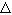

2. Метод установления.
|
Представим стационарную задачу, описываемую уравнением (10.1) для случая k = 0 (т.е., когда метод прогонки неприменим), в нестационарном виде. Для этого в уравнение (10.1) необходимо добавить фиктивную производную по времени:
Известно, что численное решение нестационарной задачи (10.4) требует задания начального условия. Если оно будет отличаться от истинного решения стационарной задачи (10.3): Однако поскольку в качестве граничных условий для численного решения нестационарной задачи (10.4) используются граничные условия исходной стационарной задачи
Данный метод решения стационарной задачи путём преобразования её в нестационарную получил название метода установления. Процесс пошагового приближения решения нестационарной задачи к решению исходной стационарной задачи называют итерационным процессом, переход от n-го шага к (n + 1)-му - итерацией, значение t - шагом итерации, а индекс п - номером итерации. |